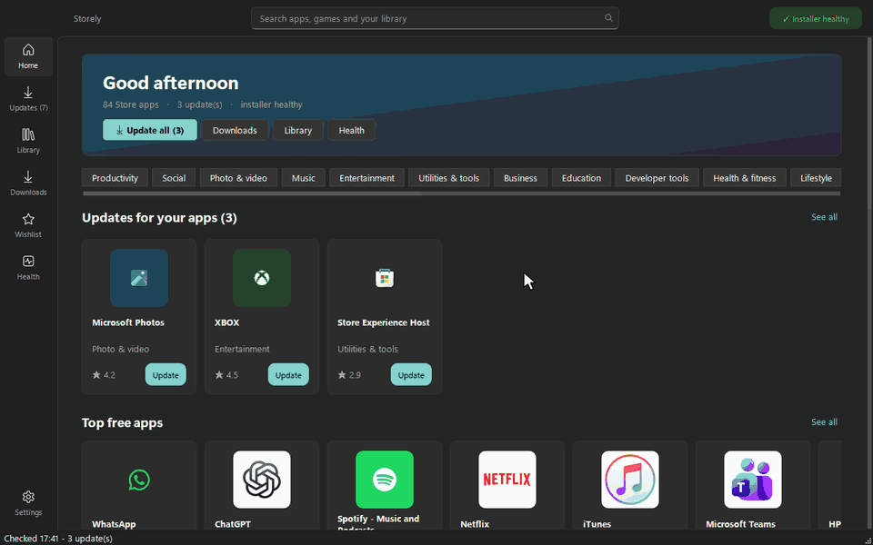
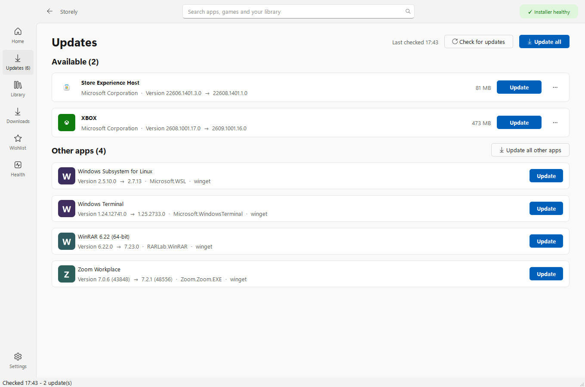
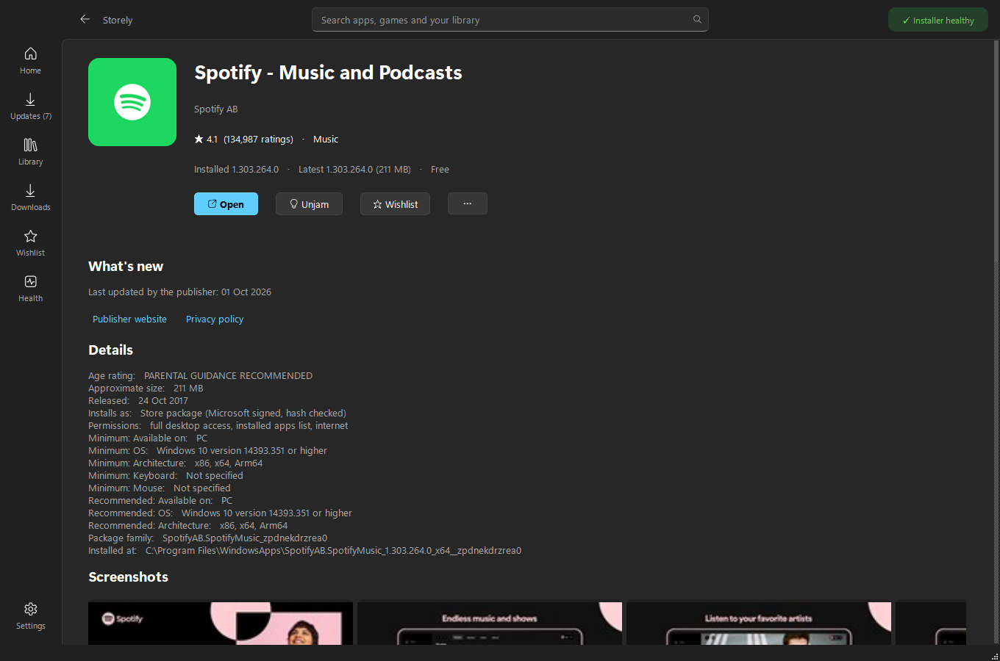
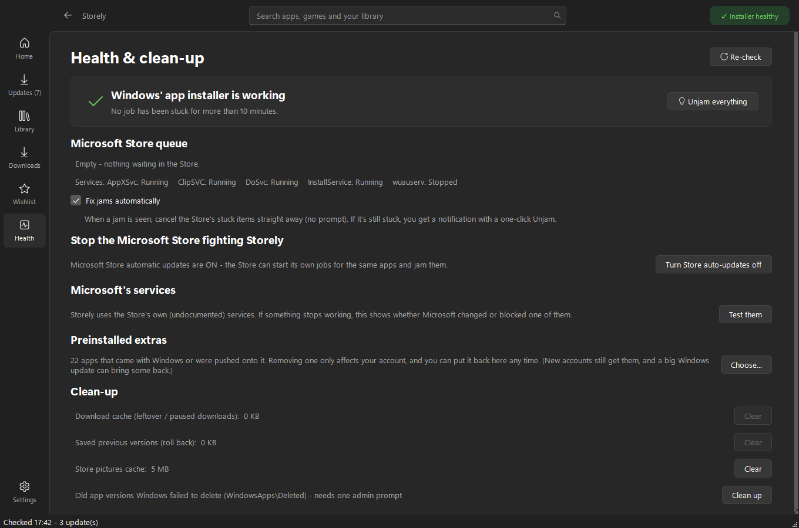
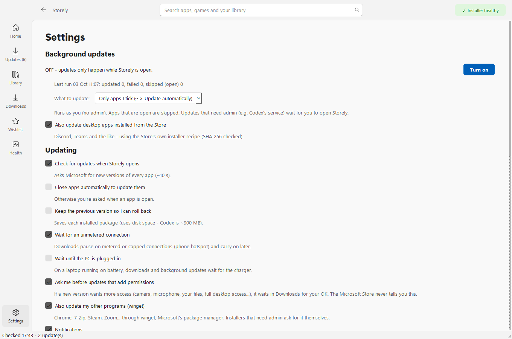

Storely installs and updates your apps from the same Microsoft servers as the Store, but it never gets stuck on "Pending". It updates your other programs too, and warns you before an update takes new permissions.
Free and open source · Windows 10 and 11 · x64 and ARM64 · No account, no tracking

It's usually not your internet. Windows installs Store apps through one queue, and three things go wrong with it.
When an install hangs, every download behind it waits on "Pending" forever.
Windows saves the queue and reloads the stuck job at every boot.
It starts its own copy of an update that's already installing, and the two cancel each other out.
One install at a time across the PC, a jam detector, and an Unjam button that clears the stuck jobs properly.
Everything most people use the Store for, plus the things it never got round to.
| Storely | Microsoft Store | |
|---|---|---|
| Stuck on "Pending" or updates that never finish | ✓ One at a time, plus Unjam | ✕ Can stay stuck, even after a restart |
| Updates your other programs (Chrome, 7-Zip, Steam, Zoom...) | ✓ Same page, through winget | ✕ |
| Warns when an update wants new permissions | ✓ Waits for your OK | ✕ Installs silently |
| Install an older version of an app | ✓ | ✕ |
| Hold one app, or skip one bad version | ✓ Per app | ✕ All or nothing |
| Pause, resume, reorder downloads, speed limit | ✓ | ✕ |
| Save an app to a USB stick for an offline PC | ✓ | ✕ |
| Remove preinstalled extras (Candy Crush, Clipchamp...) | ✓ In one go, with Put back | One at a time, in Settings |
| Paid apps and Game Pass | ✕ Needs a Store licence | ✓ |
| Free and open source, no account, no tracking | ✓ | - |
The whole Store, a proper download queue, and the health tools Windows never gave you.

Store apps, the Windows runtimes they depend on, and your other programs. "Update all" really means all.

Charts, categories, search, reviews and screenshots, plus a plain list of each app's permissions.

Checks the installer every few minutes, stops the Store fighting it, and cleans up leftovers.

Optional updates at sign-in and every 6 hours, as you and never as admin, with quiet hours and wait-for-the-charger.
The installer works like any other Windows program.
Storely-Setup-...-x64.exe for most PCs, -arm64 for Snapdragon laptops.
If Windows says "Windows protected your PC", choose More info > Run anyway. The installer isn't code-signed because signing costs hundreds a year, and Storely is free.
Next, Next, Install. Storely appears in your Start menu (right-click it to pin it) and keeps itself up to date.
Store apps only come from Microsoft's own servers and are checked against Microsoft's fingerprint and signature before they install. Other programs come through winget, Microsoft's package manager, which checks each installer too. The few admin tasks use the normal Windows prompt and only run code that can't be changed without admin rights. All the code is public.
No. They live side by side, and Storely can switch off the Store's own automatic updates so the two don't trip over each other.
Buying apps and Game Pass need a licence from your Microsoft account, which only the Store can get. Free apps, which is most of the Store, work.
Storely uses the same public services the Store app does, only installs Microsoft-signed packages from Microsoft, and doesn't get around any licensing. It's an independent project, not made or endorsed by Microsoft.
Nothing. Your settings stay on your PC. Storely only talks to Microsoft's Store and download servers, winget's sources, an app's own download server when you install one, and GitHub to check for a new Storely.